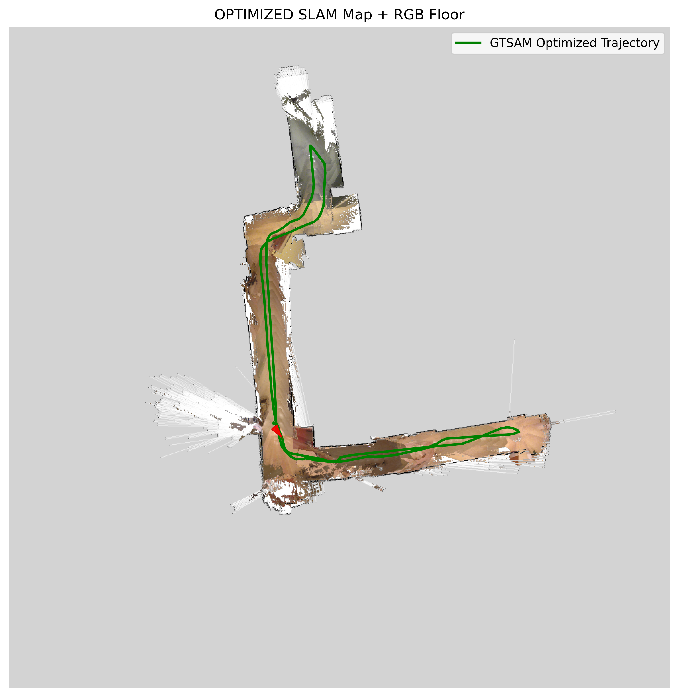
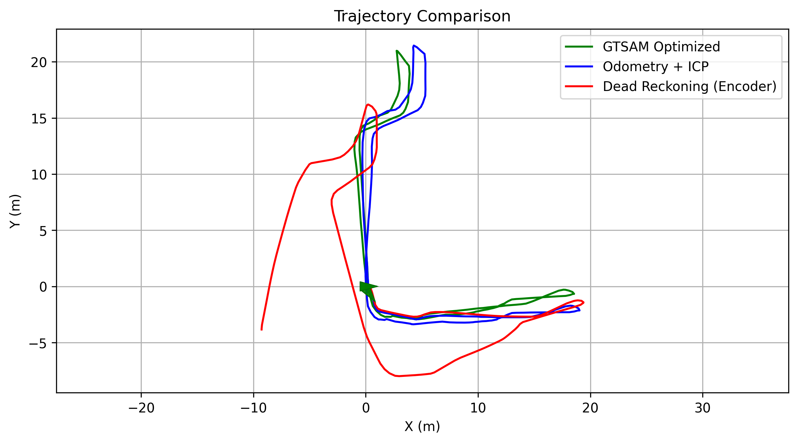

ECE 276A · MAPPING
LiDAR-Based SLAM & Mapping
Turn sensor logs into a robot trajectory, occupancy map, and colorized spatial view.

The project
The pipeline combines wheel and IMU odometry, LiDAR scan matching, loop-closure constraints, and pose-graph optimization. It then projects color information from RGB-D data onto the map.
How it works
- Align neighboring scans with ICP and build odometry constraints.
- Update an occupancy grid from LiDAR rays and optimize the pose graph with GTSAM.
- Compare the path before and after optimization and inspect the final map.
See the evidence

